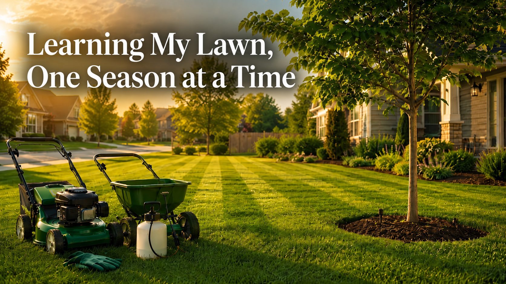

Things I've taken apart and put back together in a way that makes sense.
I own a Glock 43X. To me owning it meant being serious about understanding it.
So I built a reference. Every system, every maintenance interval, every decision point I'd want to be able to look up without hunting across a dozen sites. The Safe Action system, field strip procedure, lubrication points, holster considerations, Oklahoma law, ammunition. All of it in one place.
A firearm is a machine. Striker-fired, short-recoil, cam-lock action. It has a firing cycle the same way an engine has a combustion cycle. Understanding how it works doesn't just make you better at maintaining it. It makes you more deliberate about using it.
View the guide →
I dedicated a fair amount of this winter to researching bermuda grass management and elm tree care specific to central Oklahoma's climate. Soil chemistry, pest cycles, seasonal timing. Then I built a month-by-month guide covering everything from pre-emergent windows to elm beetle prevention.
The result is an 11-page reference I use each week to decide what needs to happen next to optimize my yard this year.
If you live in central Oklahoma this guide will more than likely be relevant for you.
View the full guide (PDF) →